EXPLAIN tab built into the Prometheus
console. These are the best assistants you can find to help you build and understand what
you are querying while seeing the results directly.EXPLAIN tab. The standalone PromLens
project was archived in July 2026 and is no longer maintained.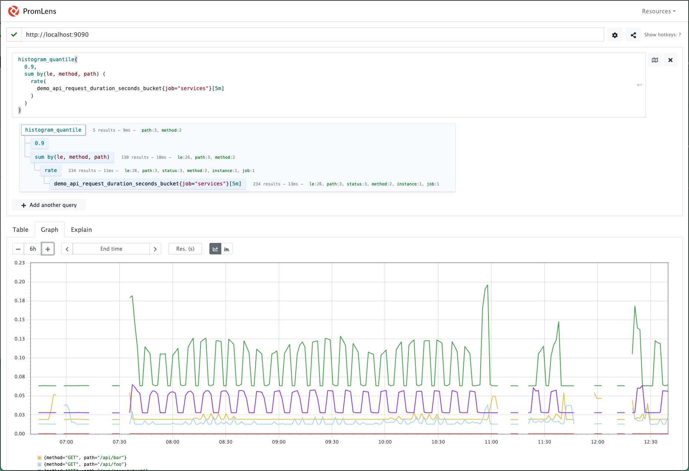
EXPLAIN tab as shown below:
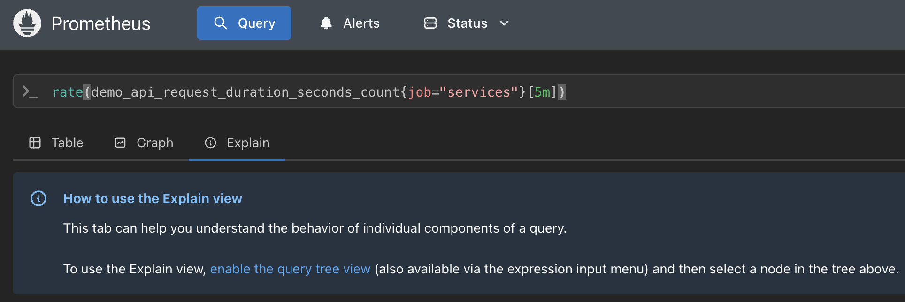
ENABLE THE QUERY TREE VIEW and putting the query
expression below into the console we see a tree view. PromQL expressions are not a single query,
but often a set of nested expressions, each one being evaluated and used as an argument or
operand to the expressions above it in the nested structure.
rate(demo_api_request_duration_seconds_count{job="services"}[5m])
rate function, which generates the final
results. Note it breaks down the query expression automatically for you below the expression
window, in this case it's focused on the rate function:
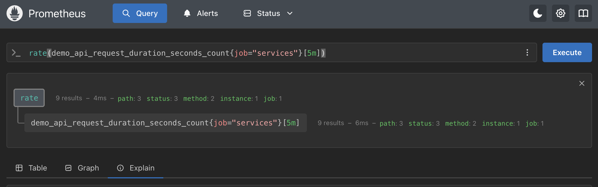
rate function line to execute it to validate the results being returned
in the TABLE tab:
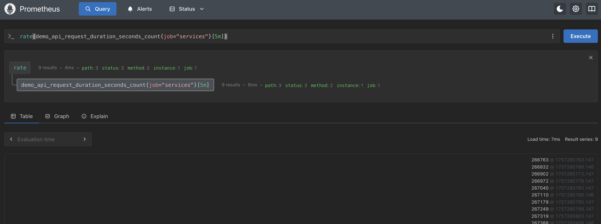
method
label results) and see how it opens a pop-up window below breaking down the results (GET and
POST):
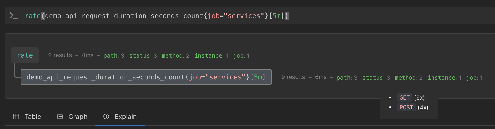
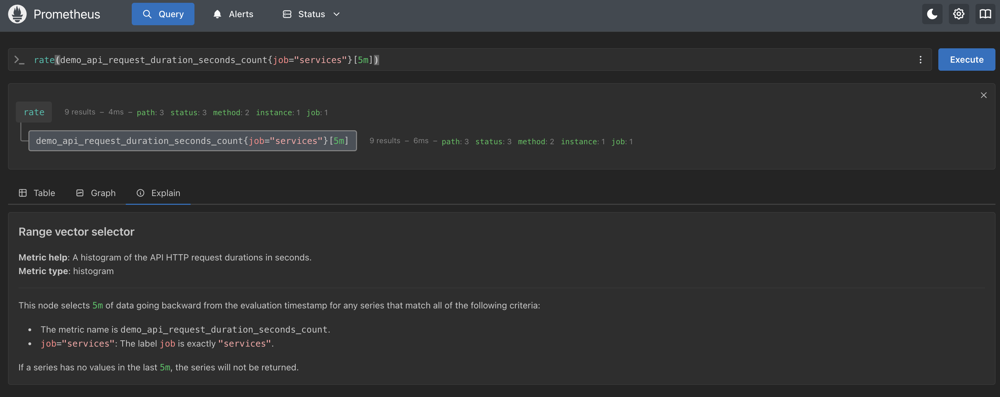
rate line for an explanation. At its most basic form of
just the function name, you see that you end up with the documentation explanation:
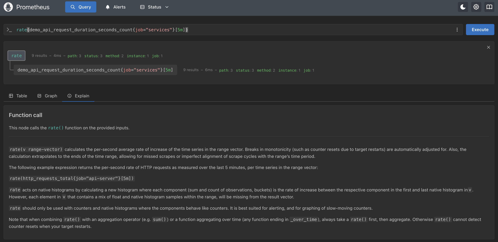
histogram_quantile(
0.9,
sum by(le, method, path) (
rate(
demo_api_request_duration_seconds_bucket{job="services"}[5m]
)
)
)
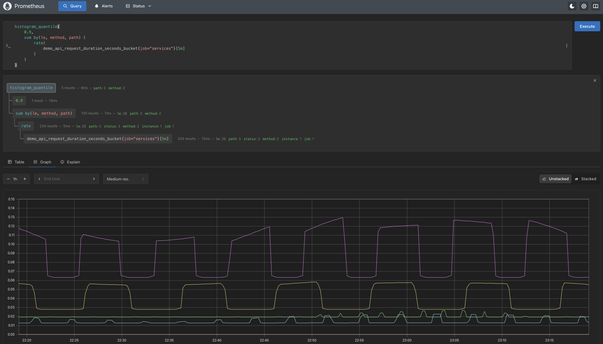
demo_cpu_usage_seconds_total{instance="localhost:8080", job="services", mode="idle"} 8310.383198889807
demo_cpu_usage_seconds_total{instance="localhost:8080", job="services", mode="system"} 3327.929701170597
demo_cpu_usage_seconds_total{instance="localhost:8080", job="services", mode="user"} 4984.887099939602
demo_cpu_usage_seconds_total{instance="localhost:8080", job="services", mode="idle"} 1.9860637950939426
demo_cpu_usage_seconds_total{instance="localhost:8080", job="services", mode="system"} 0.794675335030005
demo_cpu_usage_seconds_total{instance="localhost:8080", job="services", mode="user"} 1.1934846860666322
6.45 "hello o11y" -- occur infrequently, used as parameter values to functionssome_metric{job="services"} -- explained previouslysome_metric{job="services"}[15m] -- explained previouslysum by(job) (some_metric) -- allows aggregating over multiple series, always yields an instant vector-some_metric -- negates any scalar or instant vector values, returns same type as it was applied onsome_metric_1 + some_metric_2 -- returns scalar if both operands are scalar, otherwise vectorrate(some_metric[15m]) -- takes input parameters of varying types, returns varying types(expression)[1d:] -- takes instant vector expression as input, returns a range vector(42) -- may return string, scalar, instant vector, or range vector, depending on usagesome_metric[15m]
selects the last 15 minutes of data, but never into the future. [-15m] is not valid. To be
precise, the metric data is collected from the latest 15 minutes, meaning the data points need
to be "at most 15m old, and not stale" relative to the evaluation timestamp. Output timestamps
of all samples found in the last 15m will return them with their timestamps set to the
evaluation timestamp. If there is a 15m gap in samples for a query, then the query returns an
empty result.
histogram metrics - how to interpretquantiles - a generalized form of a percentile and how to calculate
them from histogramsle label
("less than or equal") and specifies the bucket's upper value boundary as a number encoded in a
string label value such as le="0.05" for an upper boundary of 0.05 seconds.
Note that this adds another cardinality dimension to any existing labels you are tracking.
http_request_duration_seconds_bucket{le="0.025"} 20
http_request_duration_seconds_bucket{le="0.05"} 60
http_request_duration_seconds_bucket{le="0.1"} 90
http_request_duration_seconds_bucket{le="0.25"} 100
http_request_duration_seconds_bucket{le="+Inf"} 105
http_request_duration_seconds_sum 21.322
http_request_duration_seconds_count 105
demo_api_request_duration_seconds_bucket{instance="localhost:8080",method="POST",path="/api/bar",status="200",job="services"}
le label, as shown on the next slide.
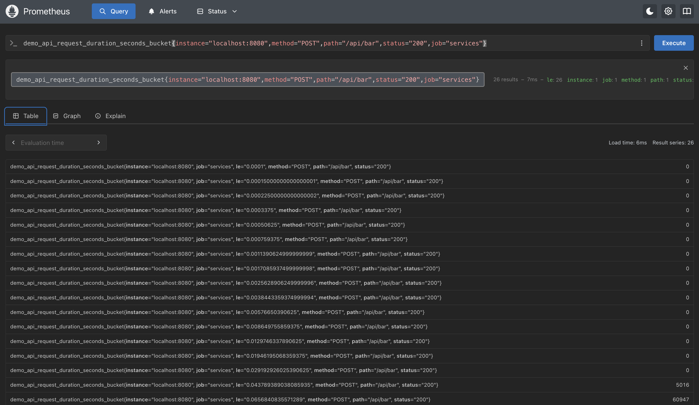
histogram_quantile(quantile_value, histogram_metric)
histogram_quantile(0.9, demo_api_request_duration_seconds_bucket{job="services"})
histogram_quantile(0.9, rate(demo_api_request_duration_seconds_bucket{job="services"}[5m]))
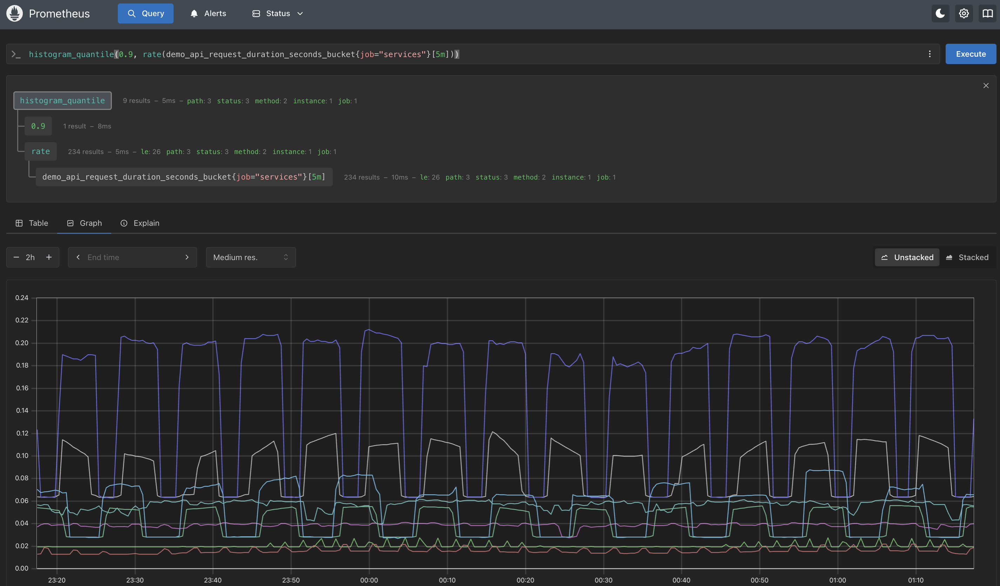
histogram_quantile(
0.9,
sum without(status, method) (
rate(demo_api_request_duration_seconds_bucket{job="services"}[5m])
)
)
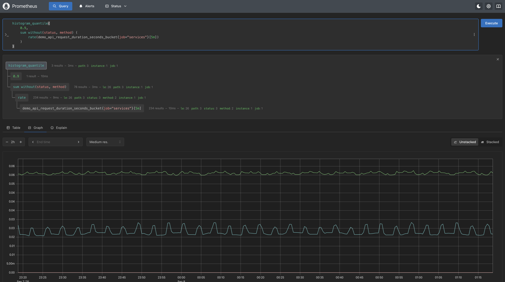
rate(demo_cpu_usage_seconds_total{mode="user", job="services"}[15m]) > 1.10
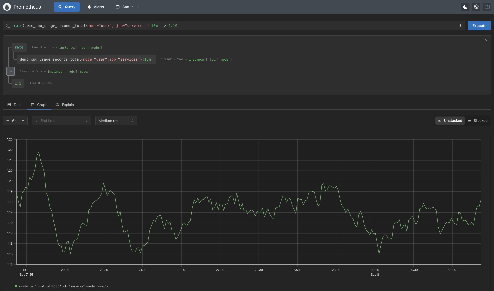
rate(demo_cpu_usage_seconds_total{mode="user", job="services"}[15m]) > 1.19
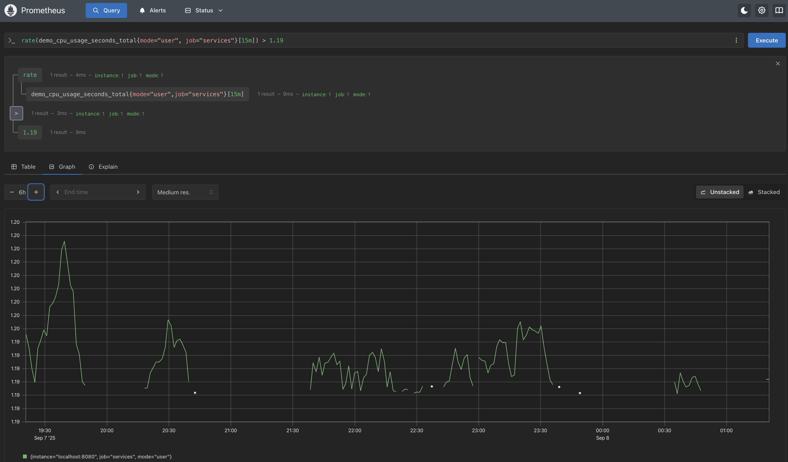
rate(demo_api_request_duration_seconds_count{status="500",job="services"}[5m]) * 50
> ignoring(status)
sum without(status) (rate(demo_api_request_duration_seconds_count{job="services"}[5m]))
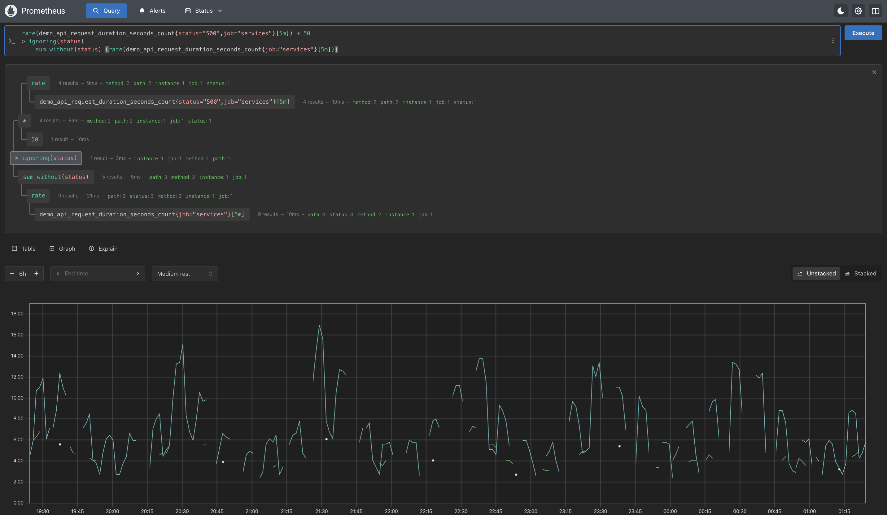
bool modifier to the operator
which results in keeping all series while setting the output sample value into a 1 (true) or
0 (false).
rate(demo_api_request_duration_seconds_count{job="services"}[5m]) > bool 0.2
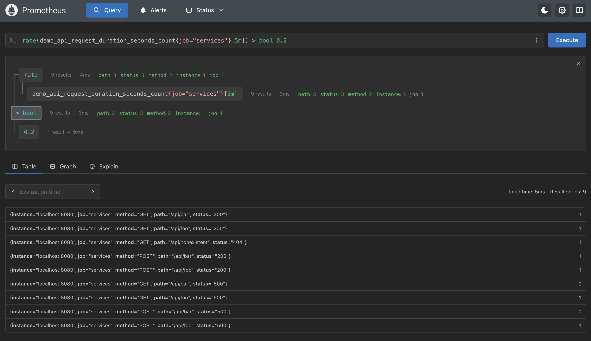
AND operator, if a match is found, the left-hand-side series becomes part
of the output. If no matching series exists on the right, the series is omitted from the output.
Let's explore this by selecting any HTTP endpoints that have a 90th percentile latency higher
than 50ms (0.05s), but only for the dimensional combinations that receive more than one request
per second. Let's use the histogram_quantile() function to calculate the 90th percentile latency
for each sub-dimension, then filter the resulting bad latencies out and retain only those that
receive more than one request per second:
histogram_quantile(0.9, rate(demo_api_request_duration_seconds_bucket{job="services"}[5m])) > 0.05
and
rate(demo_api_request_duration_seconds_count{job="services"}[5m]) > 1
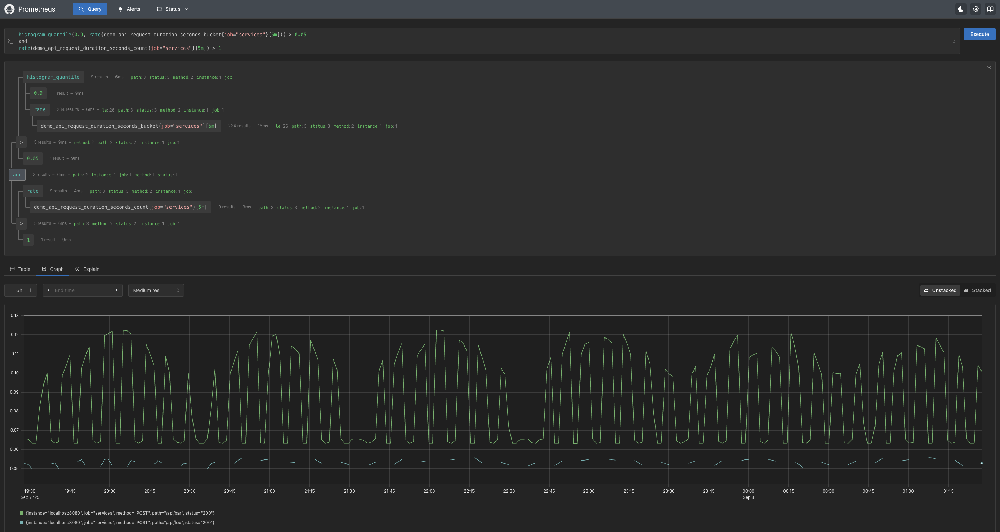
OR set
operator, and it results in the series from the left-hand side of the operation, as well as any
series from the right-hand side which don't have matching label sets on the left. To see this at
work, let's list all request rates which are either below 10 or above 30 as follows:
rate(demo_api_request_duration_seconds_count{job="services"}[5m]) < 10
or
rate(demo_api_request_duration_seconds_count{job="services"}[5m]) > 30
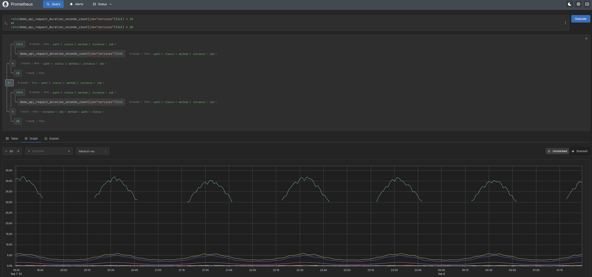
UNLESS operator, which only keeps series from the left-hand side if
equivalent label sets do not exist on the right-hand side (the right side "cuts out" elements
from the left side). This is left for you to explore on your own. You're now able to build set
intersections, unions, and differences out of labeled time series.
demo_batch_last_success_timestamp_seconds{job="services"}
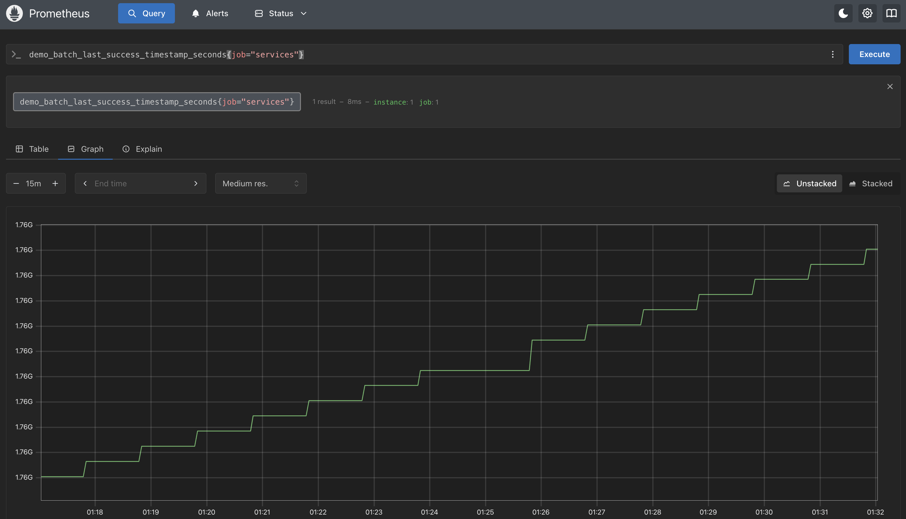
time() function to get time in seconds since the
last successful run of the batch job:
time() - demo_batch_last_success_timestamp_seconds{job="services"}
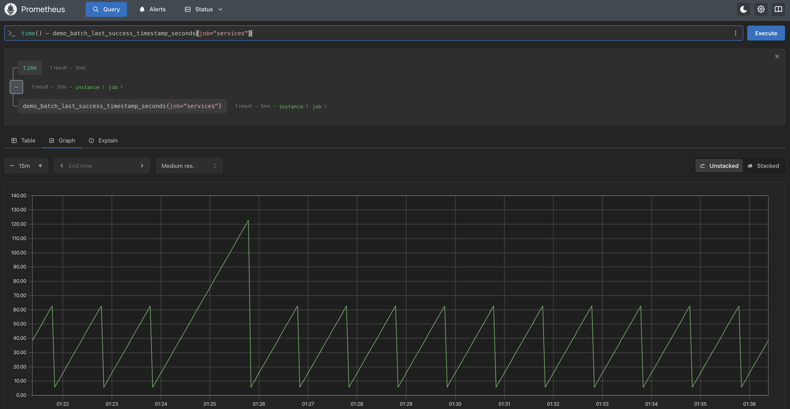
(time() - demo_batch_last_success_timestamp_seconds{job="services"}) / 3600
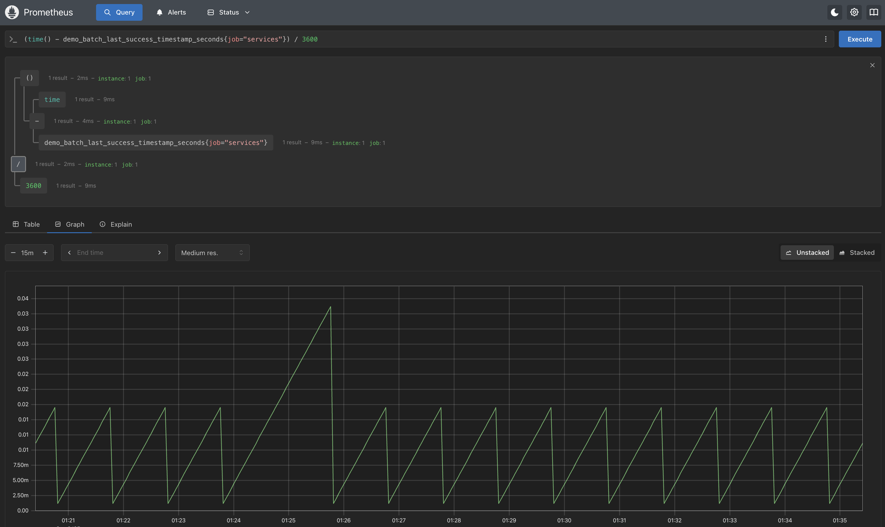
time() - demo_batch_last_success_timestamp_seconds{job="services"} > 0.5 * 60
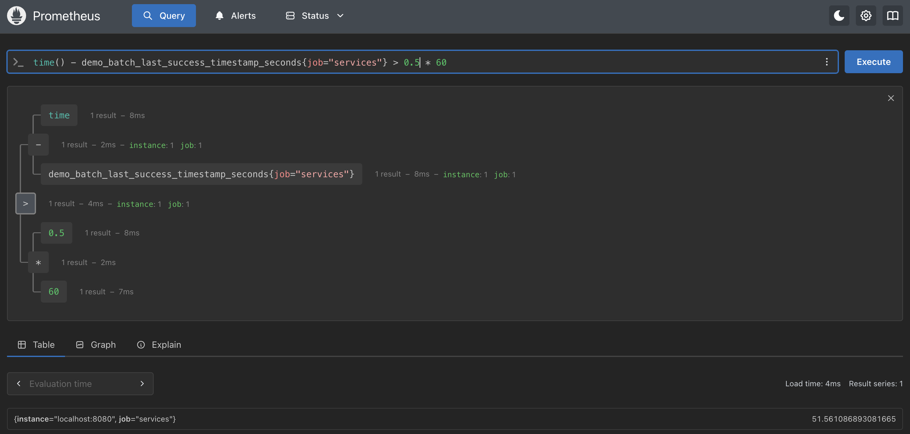
UP and the JOB and INSTANCE labels of the scraped
instance. If the scrape was successful, the value of the sample is set to 1, or 0 if the scrape
fails. Thus, we can easily query which instances are currently "up" or "down" by querying for:
up{job="services"}
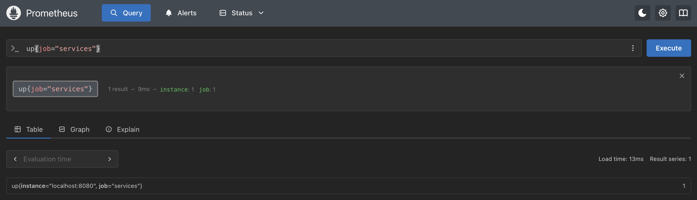
localhost:8088 (any unoccupied port will work if there is a conflict).
On Kubernetes you re-apply the services-demo-2.yaml file you wrote back in
lab 3, and the port number is a port-forward detail only, the cluster still scrapes it on 8080:
# source install.
$ ./installs/demo/services_demo --listen-address localhost:8088
# container install.
$ podman run -p 8088:8080 prometheus_services_demo:v1
# Kubernetes (k3s) install.
$ kubectl apply -f services-demo-2.yaml -n prometheus
$ kubectl port-forward -n prometheus svc/services-demo-2 8081:8080
# HELP demo_api_http_requests_in_progress The current number of API HTTP requests in progress.
# TYPE demo_api_http_requests_in_progress gauge
demo_api_http_requests_in_progress 1
# HELP demo_api_request_duration_seconds A histogram of the API HTTP request durations in seconds.
# TYPE demo_api_request_duration_seconds histogram
demo_api_request_duration_seconds_bucket{method="GET",path="/api/bar",status="200",le="0.0001"} 0
demo_api_request_duration_seconds_bucket{method="GET",path="/api/bar",status="200",le="0.00015000000000000001"} 0
demo_api_request_duration_seconds_bucket{method="GET",path="/api/bar",status="200",le="0.00022500000000000002"} 0
demo_api_request_duration_seconds_bucket{method="GET",path="/api/bar",status="200",le="0.0003375"} 0
demo_api_request_duration_seconds_bucket{method="GET",path="/api/bar",status="200",le="0.00050625"} 0
demo_api_request_duration_seconds_bucket{method="GET",path="/api/bar",status="200",le="0.000759375"} 0
demo_api_request_duration_seconds_bucket{method="GET",path="/api/bar",status="200",le="0.0011390624999999999"} 0
demo_api_request_duration_seconds_bucket{method="GET",path="/api/bar",status="200",le="0.0017085937499999998"} 0
demo_api_request_duration_seconds_bucket{method="GET",path="/api/bar",status="200",le="0.0025628906249999996"} 0
demo_api_request_duration_seconds_bucket{method="GET",path="/api/bar",status="200",le="0.0038443359374999994"} 0
...
JOB title. To do this, update the same Prometheus configuration file that
you worked with (workshop-prometheus.yml) and add the new services target to
scrape. Note for containers, instead of localhost for the targets, you'll need to use the
variable shown to discover the IP address. (Kubernetes path, see the next slide instead):
# workshop config
global:
scrape_interval: 5s
scrape_configs:
# Scraping Prometheus.
- job_name: "prometheus"
static_configs:
- targets: ["localhost:9090"]
# Scraping services demo.
- job_name: "services"
static_configs:
- targets: ["host.containers.internal:8080"]
- targets: ["host.containers.internal:8088"]
workshop-prometheus.yml to edit. Open the
workshop-values.yaml file from lab 2 and add the second target to the
existing services job, exactly as you did in lab 3. In-cluster DNS resolves
the name, so the port stays 8080:
# Scraping only Prometheus.
scrapeConfigs:
... <<<< LEAVE WHAT IS ALREADY THERE
# Scraping services demo.
services:
job_name: services
static_configs:
- targets:
- services-demo:8080
- services-demo-2:8080 <<<< ADD THIS LINE
helm upgrade --install command and the
configmap-reload sidecar tells Prometheus to reload itself (be patient, this
is not instant):
# source install.
$ ./prometheus --config.file=support/workshop-prometheus.yml
# container install.
$ podman run -p 9090:9090 workshop-prometheus:v3.13 --config.file=/etc/prometheus/workshop-prometheus.yml
# Kubernetes (k3s) install.
$ helm upgrade --install workshop-prometheus prometheus-community/prometheus \
--version 29.20.0 \
--namespace prometheus --create-namespace \
-f workshop-values.yaml
up{job="services"}
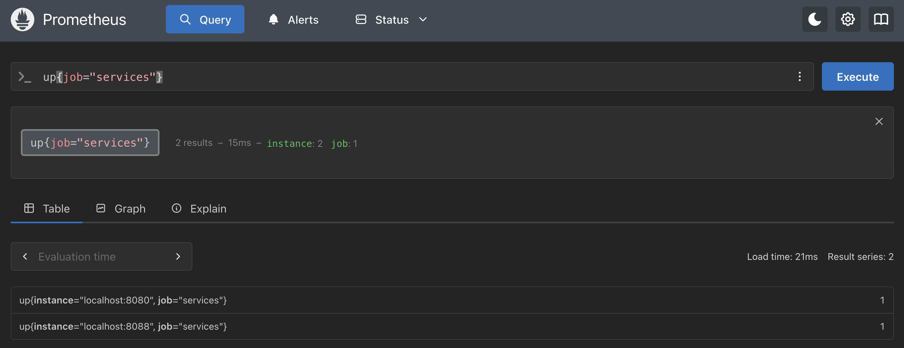
podman stop it, and on Kubernetes scale the
deployment to zero so the target stays configured and simply goes down:
# Kubernetes (k3s) install.
$ kubectl scale deploy/services-demo-2 --replicas=0 -n prometheus
up{job="services"}
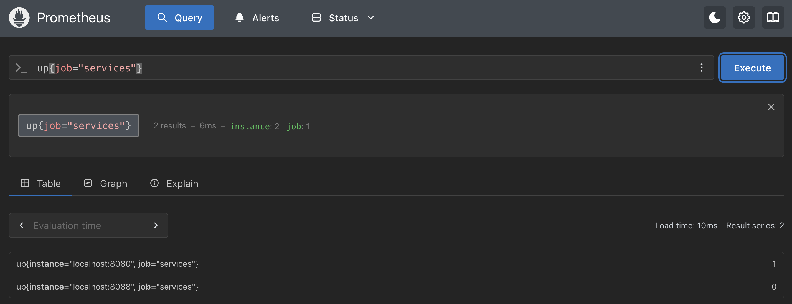
up{job="services"} == 0
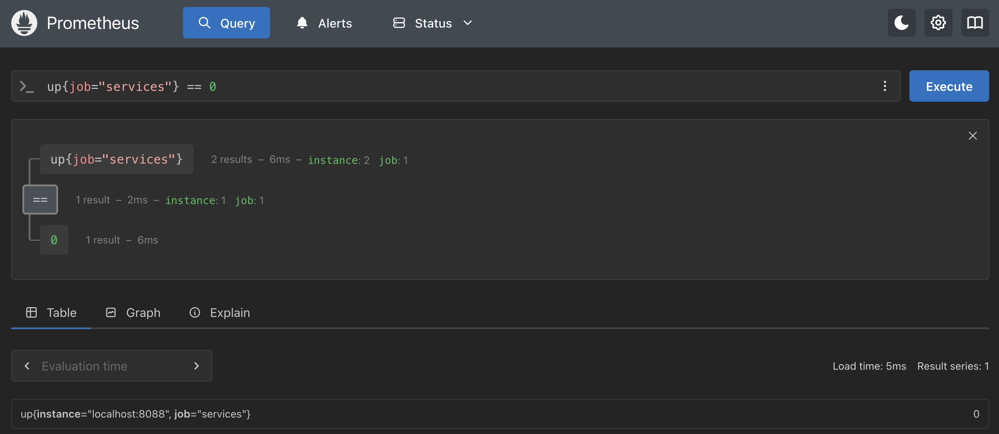
count by(job) (up{job="services"} == 0)
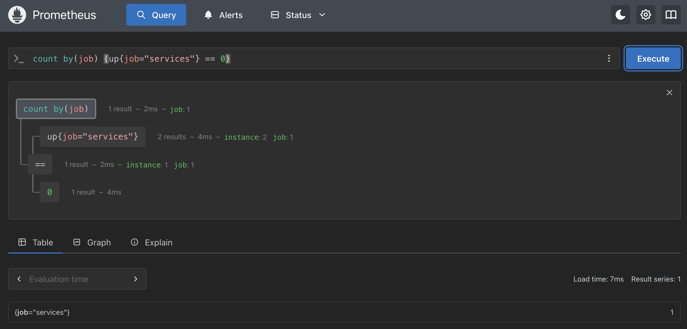
ABSENT function can help, it takes an instant vector as its input and returns
an empty result when the input contains a series. It returns a single output series when
it does not (always having a sample value of 1) and if the input is a direct vector selector,
any equals matchers (=) contained in the selector get translated into labels in the output.
absent(up{job="services"})
UP for a job that is not being scrapped (does not
even exist). You can do this by using a JOB that you know does not exist, such as this, which
returns a label "missing" and the value 1:
absent(up{job="missing"})
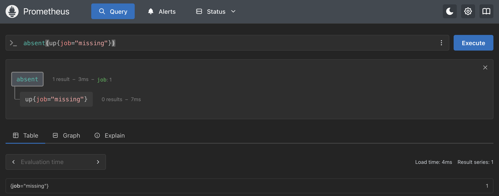
UP being 0, but also on UP being completely absent for that job.ABSENT called ABSENT_OVER_TIME which takes
a range vector and tells you whether there were no samples over the entire time range of
that input vector. This helps detect situations where series should be present at regular
intervals, but not necessarily all the time.
SUM,
AVG, and other operators. All of these aggregate over multiple series at a single
point in time. What about when you want to aggregate over time within each series, which
is often done to smooth out a spiky graph or to get a maximum value of a series over time.
PromQL provides a few functions that append _OVER_TIME() to their name to support
this. Note that not all aggregator operators have this variation, see
the docs for details.
go_goroutines{job="services"}
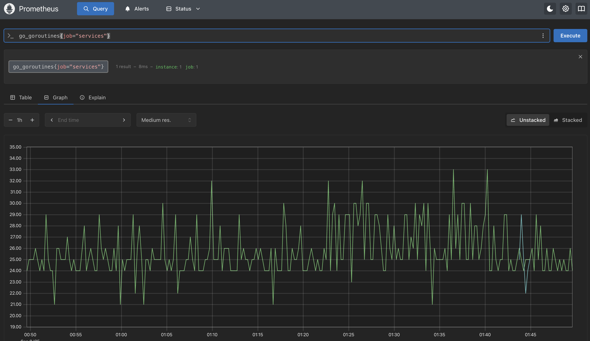
avg_over_time(go_goroutines{job="services"}[10m])
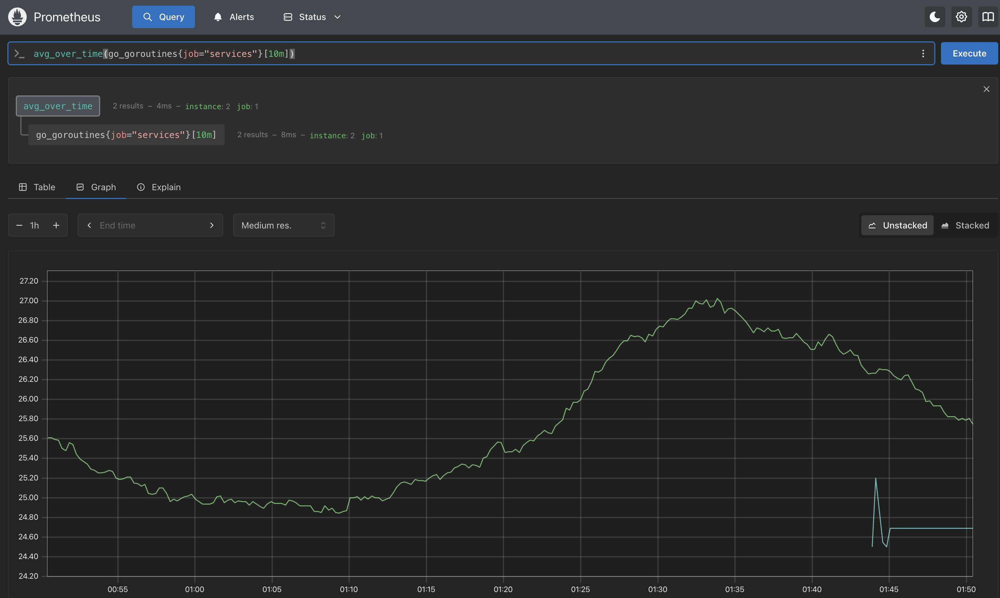
MAX aggregation over time to determine the maximum
disk usage over the last day by our services demo (there were two running at one time?). Note
in the output you will see both the services demo on port 8080 and 8088 listed, even when it's
not up and running at the moment. The metrics are calculated from previously scraped data when
it was running:
max_over_time(demo_disk_usage_bytes{job="services"}[1d])
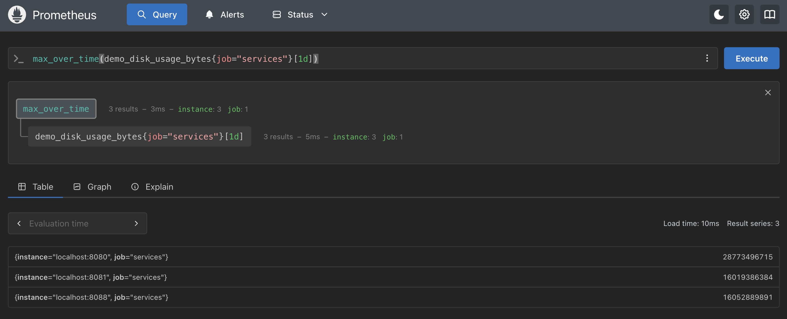
_OVER_TIME functions required a range vector as input (like
some_metric[10m]) selecting directly from the TSDB. Why won't work for
MAX_OVER_TIME when we try to find the max request rate to our services demo over
the last day? The simple answer is that the request rate is not a raw data value we can select
over time... it's a derived value from:
rate(demo_api_request_duration_seconds_count{job="services"}[5m])
MAX_OVER_TIME with a one-day duration appended... we get an error (try it!):
max_over_time(
rate(
demo_api_request_duration_seconds_count{job="services"}[5m]
)[1d] # oops.
)
Error: invalid parameter "query": 4:3: parse error: ranges only allowed for vector selectors
max_over_time(
rate(
demo_api_request_duration_seconds_count{job="services"}[5m]
)[1d:15s] # inner query over 1 day, with a 15-second resolution.
)
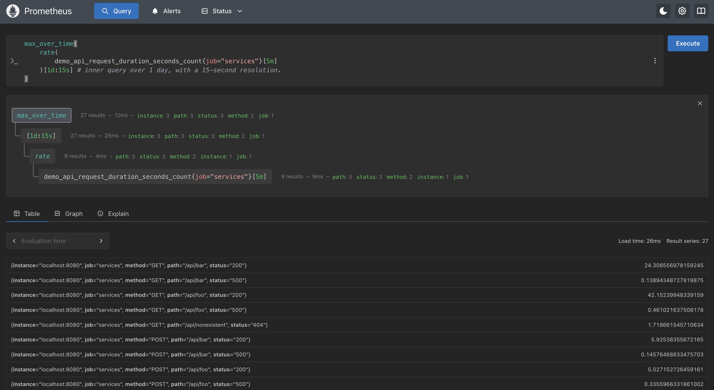
TABLE view. Note that GRAPH views automatically sort
samples by their timestamps and sample values along the X-axis and Y-axis.
sum by(path) (rate(demo_api_request_duration_seconds_count{job="services"}[5m]))
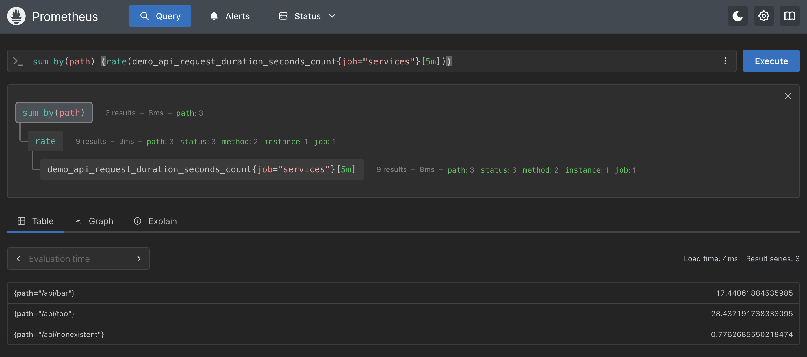
SORT_DESC to sort the results
from largest to smallest:
sort_desc(sum by(path) (rate(demo_api_request_duration_seconds_count{job="services"}[5m])))
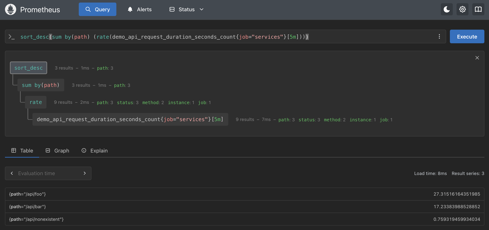
TOPK function, which provides a number to select from the
instant vector results. Let's try this on the previous query and only display the top two
results:
topk(2, sum by(path) (rate(demo_api_request_duration_seconds_count{job="services"}[5m])))
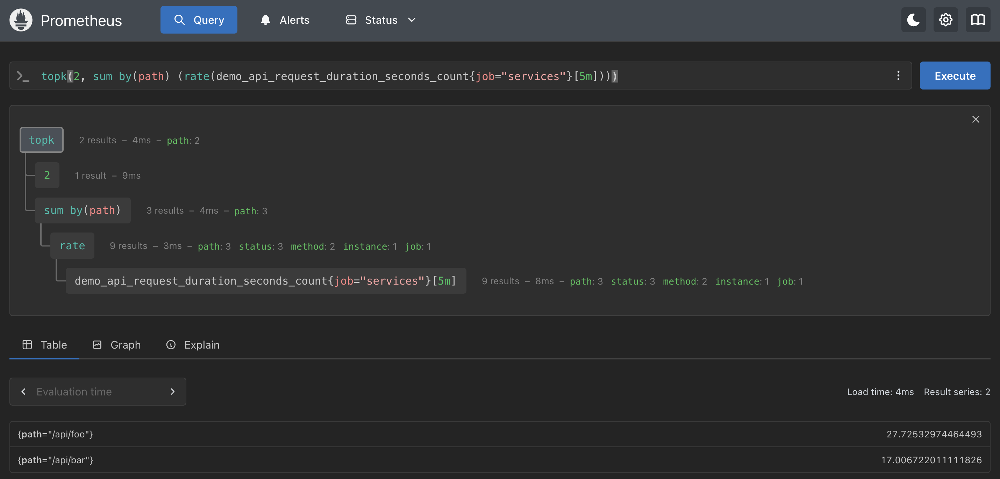
BOTTOMK function, which
provides a number to select from the instant vector results. Let's try this on the same query
to display just the last two results:
bottomk(2, sum by(path) (rate(demo_api_request_duration_seconds_count{job="services"}[5m])))
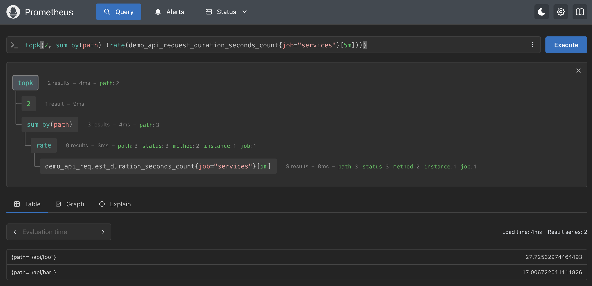
TOPK and BOTTOMK can yield surprising results
due to the way PromQL is evaluated. You might expect to see the K top or bottom series as
averaged over the entire graph time range — but instead, PromQL computes the K series
separately for each resolution step along the graph range, since a range query is
evaluated as many independent instant queries at subsequent resolution timestamps. Thus, the
identity of the top or bottom K series can actually vary over the range of the graph and your
graph may show more than K (partially present) series in total if the series doesn't maintain an
equal ordering over the whole graph range. The question is how to avoid this?@ TIMESTAMP modifier
that causes the selector to select data at a fixed absolute timestamp. Let's look at how this
modifier works and then use it to stabilize our own TOPK and BOTTOMK
results.
demo_memory_usage_bytes{type="free"} @ 1643623922.444
demo_memory_usage_bytes{type="free"} @ start()
demo_memory_usage_bytes{type="free"} @ end()
TOPK expression
from the previous exercises? Instead of directly selecting the top 2 request rates at every
resolution step, first select all rates in the usual fashion (without an @ modifier), but then
filter them using an and operator and a second selector that selects the overall highest 2 rates
as measured over the full graph range. This second selector needs to be anchored to the end of
the graph range and then look back over the entire graph range (1h in this example), to compute
the overall largest rates:
# first select all rates.
sum by(path) (rate(demo_api_request_duration_seconds_count{job="services"}[5m]))
and
# Select top 2 biggest rates for the 1-hour graph window.
topk(2,sum by(path) (rate(demo_api_request_duration_seconds_count{job="services"}[1h] @ end())))
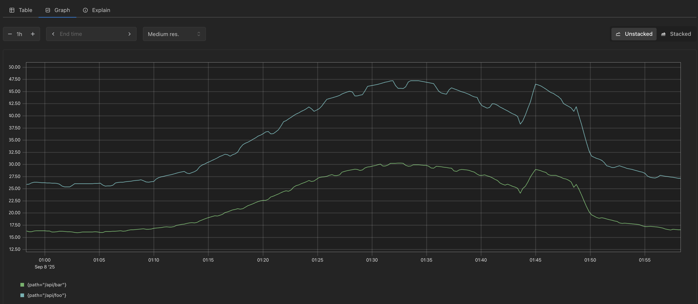
TOPK and @ END you might
notice that this doesn't change much for the output of our very stable service demo. Rest
assured, this has a big impact on more noisy and rapidly changing input metrics. Below you
see TOPK on the left and the stabilized @ END on the right:
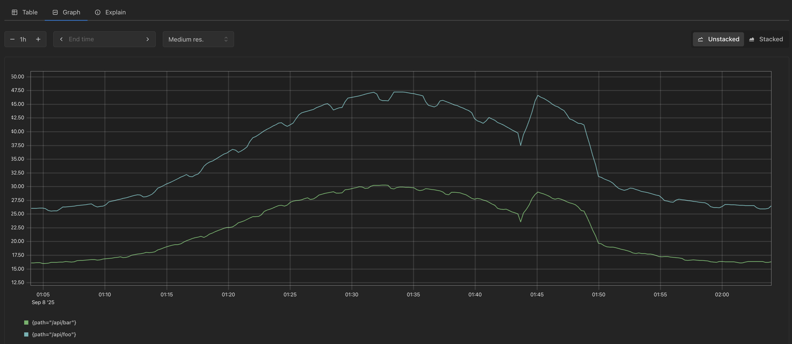
DURATION
modifier to any range or instant series selector.DEMO_ITEMS_SHIPPED_TOTAL that
tracks shipment of items with a simulated "daily" traffic period of 5 minutes (so we don't have
to wait a full day to see the period). Take a look at its rate to see it's got a built-in dip
which represents a holiday. (If you left the second services demo instance running, these
queries return two series instead of the one shown here):
rate(demo_items_shipped_total{job="services"}[1m])
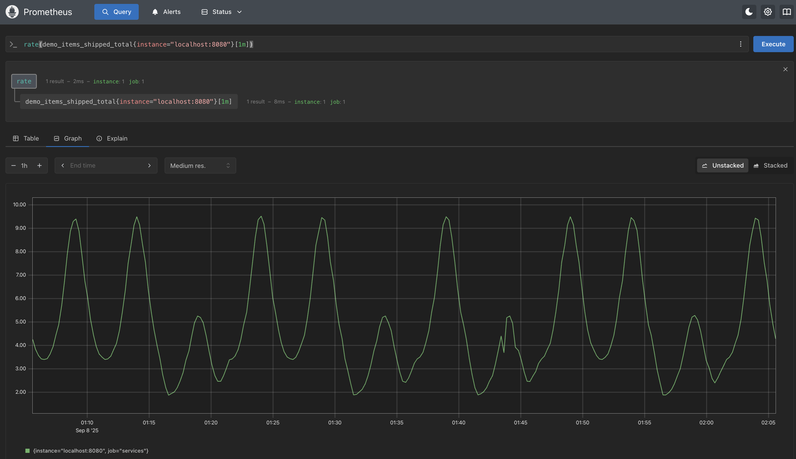
demo_is_holiday{job="services"}
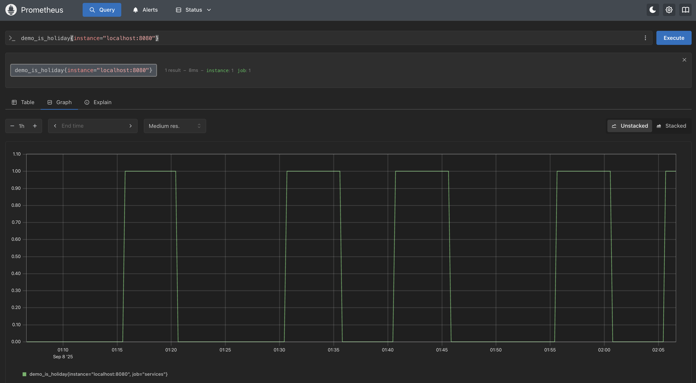
rate(demo_items_shipped_total{job="services"}[1m])
/
rate(demo_items_shipped_total{job="services"}[1m] offset 35m)
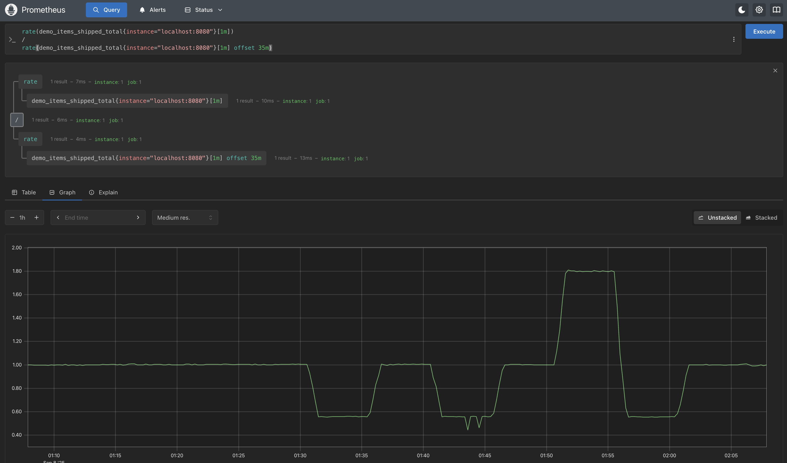
UNLESS set operator:
(
rate(demo_items_shipped_total{job="services"}[1m])
/
rate(demo_items_shipped_total{job="services"}[1m] offset 35m)
)
unless
(
demo_is_holiday == 1 # Is a holiday?
or
demo_is_holiday offset 35m == 1 # Was a holiday 7 "days" ago?
)
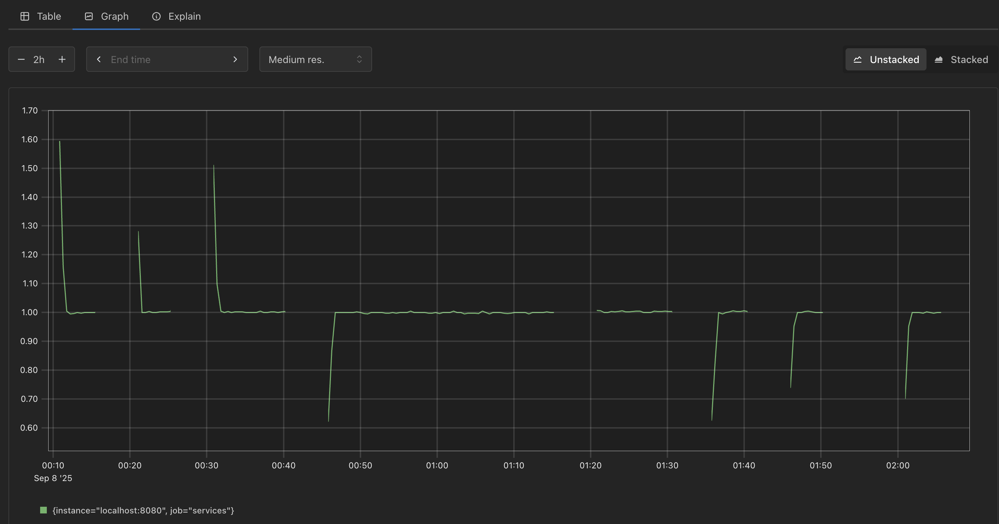
(
rate(demo_items_shipped_total{job="services"}[1m])
/
rate(demo_items_shipped_total{job="services"}[1m] offset 35m)
)
unless
(
demo_is_holiday
!=
demo_is_holiday offset 35m
)
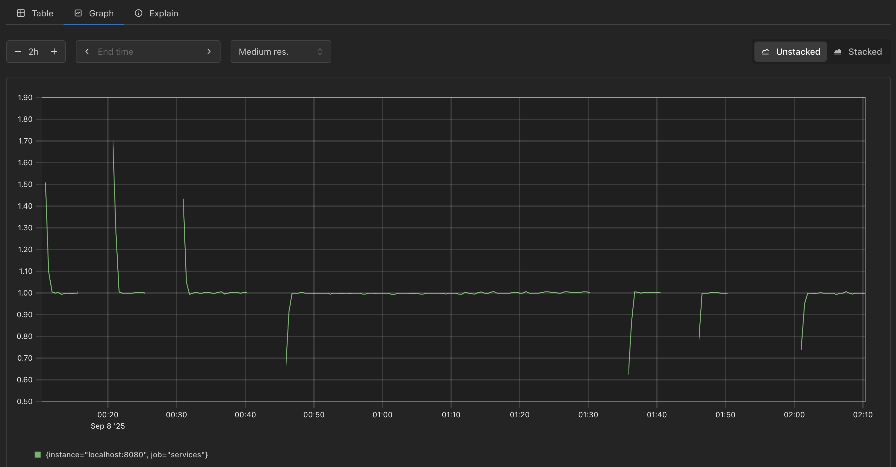